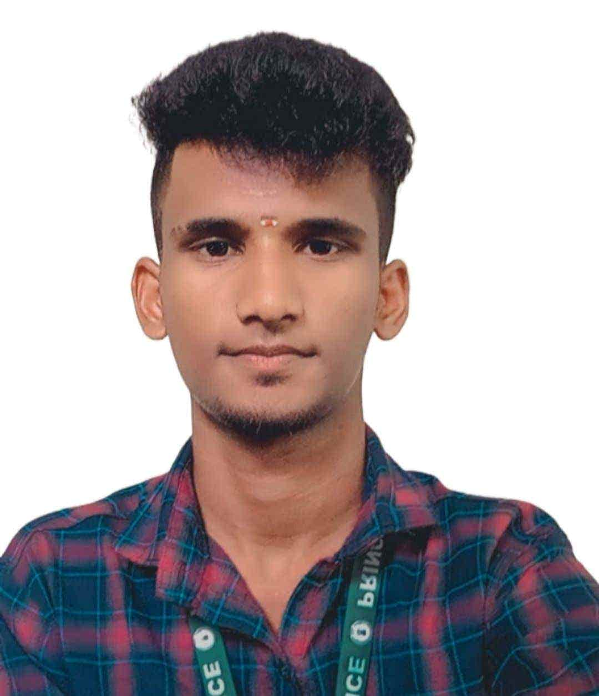

Hi, I'm Manivel N
Postgraduate scholar in M.A. Public Administration at RGNIYD (Institute of National Importance) and B.E. in Biomedical Engineering (PDKVCET · 78%). Represented the State of Tamil Nadu at the National Level in the All India NCC RDC Idea Innovation Competition 2025 at Acharya Nagarjuna University, selected as an AICTE YUKTI Innovation Fellowship Finalist, holder of the prestigious NCC 'C' Certificate with 'A' Grade, and appointed AICTE Innovation Ambassador.
Professional Profile & The Interdisciplinary Triad
About Manivel N
I am Manivel N, a postgraduate scholar pursuing an M.A. in Public Administration at the Rajiv Gandhi National Institute of Youth Development (RGNIYD), an Institute of National Importance under the Ministry of Youth Affairs and Sports, Government of India. I graduated with a B.E. in Biomedical Engineering from Prince Dr. K. Vasudevan College of Engineering & Technology (PDKVCET), affiliated with Anna University (78% Academic Grade).
My academic pursuits center on Indian history, Tamil Nadu's historical and political development, public administration, public policy, social justice, youth empowerment, and institutional evolution. My unique intersection of biomedical engineering analysis and public governance allows me to connect historical institutional lineages with modern state machinery, scientific innovation, and civic equity.
Recognized for high-caliber leadership and innovation, I had the honor of representing Tamil Nadu at the National Level in the All India NCC RDC Idea Innovation Competition 2025 held at Acharya Nagarjuna University, Andhra Pradesh. Furthermore, I was selected as an AICTE YUKTI Innovation Fellowship Finalist by the Ministry of Education's Innovation Cell, earned the premier NCC 'C' Certificate with 'A' Grade, served as an AICTE Innovation Ambassador, and held executive leadership as Vice President of PRINCE_TINKERERS LAB.
"I aim to build a portfolio connecting historical inquiry with contemporary governance, regional development, and public policy, while actively developing my capabilities in historical documentation, empirical research, and public heritage awareness."
The Interdisciplinary Triad
How disparate fields synthesize in my research framework:
Engineering & Science
Analytical problem-solving, bioinstrumentation, empirical controls, quantitative analysis (NIT Trichy, B.E. 78%).
Public Governance & Administration
Administrative theory, institutional evaluation, development economics, state planning (RGNIYD, MIDS, SPC Tamil Nadu).
Historical Inquiry & Social Justice
Inscriptions, local village assemblies (Uttaramerur), Dravidian social reform movements, and constitutional origins.
Academic Journey & Formal Education
A structured combination of postgraduate public administration, undergraduate engineering training, and specialized public policy management.
Master of Arts in Public Administration
Advanced postgraduate specialization exploring administrative theory, public governance systems, institutional dynamics, development administration, and policy analysis under the Ministry of Youth Affairs and Sports.
Bachelor of Engineering in Biomedical Engineering
Rigorous four-year engineering curriculum cultivating quantitative modeling, bioinstrumentation, signal analysis, and scientific research methodologies. Concurrently served in the National Cadet Corps and campus student leadership.
Technical foundation equips me with data literacy, scientific problem-solving, and technology evaluation tools directly applicable to evidence-based public administration and policy analysis.
Certificate Programme in Public Policy Management
Specialized immersion in developmental policy, social welfare paradigms, institutional analysis, and empirical evaluation of government interventions across socioeconomic strata in Tamil Nadu.
Experience & National Leadership
Demonstrated service across national military representation, innovation governance, student organizations, and empirical scientific fieldwork.
Participant — All India NCC RDC Idea Innovation Competition 2025
Selected to represent the State of Tamil Nadu at the National Level in the prestigious All India NCC Republic Day Camp (RDC) Idea Innovation Competition 2025 hosted at Acharya Nagarjuna University. Competed against top collegiate innovators from across India, presenting solutions addressing institutional, defense, and public governance challenges.
YUKTI Innovation Fellowship Finalist
Recognized as a National Finalist for the prestigious YUKTI Innovation Fellowship organized by AICTE and the Ministry of Education's Innovation Cell (MIC), Government of India. Evaluated on novelty, societal impact, commercialization feasibility, and institutional scalability of proposed innovations.
NCC Cadet (3 Years Service)
Completed 3 continuous years of regimented military drill, arms training, leadership camps, and civic defense. Awarded the coveted 'C' Certificate with 'A' Grade—the premier grading in NCC demonstrating supreme discipline, parade command, national service, and institutional leadership.
Innovation Ambassador
Appointed to champion institutional innovation, creative problem-solving, design thinking, and entrepreneurship among collegiate youth. Supports research into how technological policy and grassroots innovation influence regional social progress.
Vice President
Spearheaded student maker initiatives, hackathons, and cross-departmental technical collaboration in an active tinkering laboratory. Managed student teams, project coordination, and hands-on fabrication facilities.
Summer Research Intern — Energy & Environment
Conducted laboratory investigations on Microbial Fuel Cells (MFCs) for sustainable bio-energy and wastewater treatment. Gained deep exposure to experimental controls, analytical data collection, and scientific problem-solving in premier laboratories.
Field Investigator
Conducted direct primary data collection, surveyed households and community groups, and supported research coordination on social and developmental conditions in Tamil Nadu. Experience that forms the bedrock for future historical and institutional field research.
Gemini Student Ambassador Intern
Selected to drive digital literacy, generative AI awareness, and educational technology adoption among students. Focused on utilizing digital research assistants and language models to accelerate academic research and knowledge dissemination.
Innovation & Development Programmes
Active engagement in national competitions, bootcamps, cyber safety crusades, institutional councils, and state policy planning.
All India NCC RDC Innovation Participant 2025
Represented Tamil Nadu at the apex All India NCC Republic Day Camp (RDC) Idea Innovation Competition. Showcased innovative concepts solving strategic national and public welfare challenges under rigorous pan-India evaluation.
AICTE YUKTI Innovation Fellowship Finalist
Shortlisted among top national finalists for the YUKTI Innovation Fellowship, validating high-potential technological problem-solving and institutional implementation frameworks for societal advancement.
AICTE IDE Bootcamp Participant
Selected for the national-level Innovation, Design, and Entrepreneurship (IDE) Bootcamp organized by AICTE and the Ministry of Education's Innovation Cell. Gained immersive coaching in design thinking, rapid prototyping, problem discovery, and translating institutional insights into public solutions.
Cyber Ambassador
Conducted intensive cyber-hygiene and information security awareness workshops educating more than 600 students. Delivered interactive sessions on digital safety, data privacy, social engineering protection, and the civic responsibilities of young citizens in a digitized democracy.
Student Coordinator: NDLI, E-Cell & IIC
Led campus-wide reading initiatives, knowledge engagement, and incubation seminars. Encouraged student access to digital scholarship repositories and organized pitch competitions to nurture entrepreneurial problem-solving.
Former Fellow — SPC Tamil Nadu
Gained practical immersion in state-level development planning, policy formulation, socioeconomic indicators, and monitoring public schemes. Provided foundational exposure to how historical administrative legacies inform modern regional policy in Tamil Nadu.
History-Focused Research Interests & Proposed Projects
Interdisciplinary research agendas uniting Tamil Nadu's administrative history, constitutional governance, social reform movements, and digital humanities.
Tamil Nadu's Historical & Administrative Heritage
Investigating the evolution of regional administrative institutions, local village assemblies (Sabhas, Urs), epigraphical administrative records (e.g., Uttaramerur inscriptions), and traditional irrigation tank networks (Eri systems) in comparison to contemporary Panchayati Raj bodies.
Indian Freedom Movement & Constitutional Development
Analyzing the institutional foundations of Indian democracy, debates within the Constituent Assembly, the structural transition from colonial apparatus to sovereign developmental state, and the historical evolution of civil service neutrality.
Social Reform & Social Justice in Tamil Nadu
Exploring the Self-Respect Movement, Non-Brahmin Manifesto, democratization of public education, communal representation orders, and how grassroots social movements transformed affirmative action and welfare public policy in modern Tamil Nadu.
Digital History & Heritage Documentation
Pioneering digital humanities applications: utilizing open GIS mapping for archaeological sites, building structured digital archives for local governance records, and leveraging AI tools to make archival heritage accessible to students and the wider public.
Admissions & Fellowship Committee Blueprint Ready
In alignment with academic recommendations for heritage, museum, and archive internships, complete structured project proposals—incorporating specific research questions, primary/secondary sources, archival methodology, and bibliography—can be inspected and generated directly above.
Skills & Competencies Matrix
Interdisciplinary capabilities spanning empirical research, governance analysis, technical tools, and civic outreach.
Research & Methodology
- Field investigation & household surveys (MIDS)
- Primary data collection & qualitative coding
- Analytical and critical thinking
- Empirical observation & hypothesis formulation
Public Administration
- Institutional & bureaucratic analysis
- Governance models & accountability mechanisms
- Development administration frameworks
- Public program monitoring and evaluation
Historical Inquiry
- Historical interpretation & source criticism
- Epigraphical and inscriptional awareness
- Historiographical synthesis of Tamil Nadu
- Archival source evaluation (developing capability)
NCC & Military Command
- All India RDC Innovation 2025 (Tamil Nadu)
- NCC 'C' Certificate 'A' Grade
- Regimented discipline & parade drill command
- Disaster relief & civic emergency coordination
Digital Engagement & AI
- Cyber awareness & digital safety advocacy
- Generative AI & Vertex AI Prompt Engineering
- Digital library repository systems (NDLI)
- Google Cloud & AWS platform fundamentals
Communication & Outreach
- Large-audience public education (600+ students)
- Academic presentation & seminar facilitation
- Interdisciplinary reporting & synthesis
- Peer mentoring & community advocacy
Innovation & Problem Solving
- AICTE YUKTI Innovation Fellowship Finalist
- Design thinking and empathy-based prototyping
- AICTE IDE Bootcamp innovation methodologies
- Tinkering and hands-on maker culture
Policy Analysis
- Comparative public policy frameworks
- Research-oriented developmental perspectives
- State planning & welfare policy study
- Socioeconomic indicator interpretation
Professional Achievements & Accreditations
Formal verifications, institutional honors, national representations, technical certifications, and leadership appointments.
All India NCC RDC Innovation 2025
Represented Tamil Nadu at Acharya Nagarjuna University, AP • National Level
AICTE YUKTI Innovation Fellowship Finalist
National Finalist evaluated by AICTE & Ministry of Education Innovation Cell (MIC)
NCC 'C' Certificate • 'A' Grade
National Cadet Corps (NCC), India • August 2023 – May 2026 (Highest Distinction)
B.E. Biomedical Engineering (78%)
Prince Dr. K. Vasudevan College of Engineering & Technology (Anna University) • Class of 2026
M.A. Public Administration Scholar
Rajiv Gandhi National Institute of Youth Development (RGNIYD), Institute of National Importance (2026–2028)
Google Prompt Design in Vertex AI
Official Google Cloud Credential • Issued April 2025
AWS Certified Professional
Cloud architecture and infrastructure fundamentals certification
Google Analytics Certified
Measurement, web analytics, and audience behavior tracking
AICTE Innovation Ambassador
All India Council for Technical Education • Institutional Innovation Leadership
AICTE IDE Bootcamp Delegate (2025 & 2026)
Two-time participant in national innovation, design, and entrepreneurship bootcamps
Public Policy Management Credential
Madras Institute of Development Studies (MIDS), Chennai
NIT Tiruchirappalli Summer Fellowship
Microbial fuel cell research in Energy & Environment (2024)
C-DAC Cyber Ambassador Citation
Cyber-hygiene outreach successfully educating over 600 students
Vice President, PRINCE_TINKERERS LAB
Executive leadership of student innovation and technical tinkering hub
Collaboration, Inquiries & Contact
Future Vision & Academic Philosophy
My professional journey combines engineering education, public administration, research, innovation, and youth engagement. As I continue my postgraduate studies at RGNIYD, I aim to deepen my understanding of India's historical development, Tamil Nadu's social and political heritage, and the evolution of public institutions.
My goal is to build an evidence-based portfolio that connects historical research with contemporary governance and development. By combining documentary research, comparative analysis, public engagement, and digital knowledge-sharing, I hope to contribute to greater awareness of India's history and its relevance to democratic institutions, social justice, and inclusive development.
Direct Contact Channels
Open to academic collaborations, research fellowships, public history projects, and youth leadership initiatives.